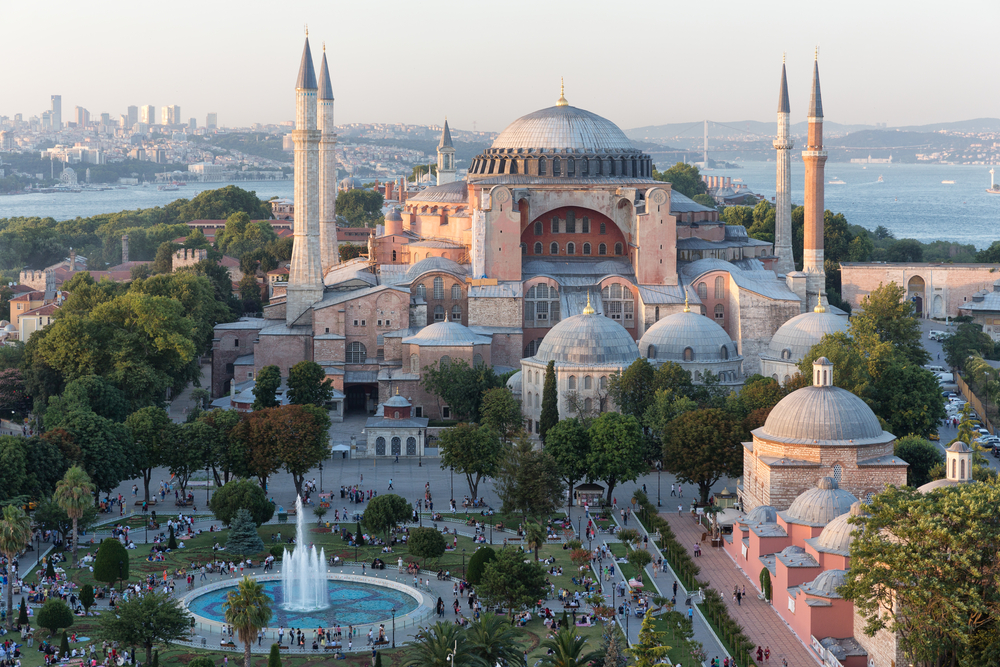

Hagia Sophia
Hagia Sophia (gr. Ἁγία Σοφία, Aja Sofia; tur. Ayasofya) – meczet w Stambule, a w przeszłości kolejno świątynia chrześcijańska, meczet i muzeum. Uważana za najważniejsze dzieło architektury bizantyńskiej.

poprzednie zdjęcie
Następne zdjęcie